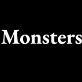
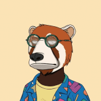

MondrianNFT MondrianNFT 是 4096 个可证明的稀有生成 Mondrian 启发向量 NFT 摘要的集合。跨越了 Piet 的多种风格、阶段和格式的全部，反映了他的真实世界收藏的稀有性。 Art101.io 的 MondrianNFT 将 Mondrian 收藏的每个阶
Monkey Bet DAO Monkey Bet 是世界上第一个去中心化游戏 x NFT 协议。每个 Monkey 都是 DAO 成员。猴子的最大供应量为 10,000 个，每个铸币成本为 0.05 ETH。Monkey miners 收到 Monkey Money，这
 Monsters (for Adventurers) Monsters (for Adventurers) 是由 DnD 和矮人要塞启发的 10,000 个独特怪物的集合。每个怪物都有一组随机的特征，包括颜色、种族、危险、弱点等等。 Monsters 项目体现了 Loot 的理念，即在社区手
Mystery Nft Collection Official 价格惊人的神秘 NFT 收藏！ 赢取巨额现金奖励、蓝筹 NFTS、访问独特的活动和社区等等！ 您所要做的就是将 MYSTERY PASS 持有至 2022 年 7 月 1 日。 第一个薄荷是免费的😏
N O I S E NOISE 由 3 个名为的动态创作组成， Soul，响应 $ASH 生态系统， Impulse，响应它的收藏家，以及 $ASH 生态系统的一部分， 和 Auctōrem，一个献给 $ASH
NEKOPARA Collection Chocola (ショコラ Shokora?) 是一个非常开朗直率的猫女，性格像狗，非常喜欢她的主人。 她是Vanilla的双胞胎妹妹，是Minaduki猫女中最小的一个。（如
Neo & Tima 过去 7 天没有售出 Neo & Tima。 2500Neo 和 2500Tima 都是 Zizan Razak 发明的，我们将30% 的利润将捐给慈善基金。 这是Neo & Tima NFT - 常见问题（FAQ） ▶ 什么是 Neo & Tim
Neo Port 过去 7 天内并没有售出 Neo Port。 通缉没有 VIBE 的 NGMI 逃犯的新（n）端口（特征）。 通过报告与 WAGMI BLASPHEMERS 的任何接触 Neo Port NFT - 常见问题（FAQ） ▶ 什么是 Neo 端口？
Neo Punk Society NPC 过去 7 天没有售出 NeoPunkSociety。 7777 3D NFT，就像传说中的加密朋克协会一样，将让您独家访问元界中的第一个节日组织者。Neo Punk Society 不
NEO TOKYO APES NEO TOKYO APES NFT 在过去 7 天内售出 19 次。NEO TOKYO APES 的总销售额为 139.31 美元。一个 NEO TOKYO APES NFT 的平均价格为 7.3 美元。共有 552 名 NEO TOKYO APES 所有者，拥有 4,444 个代币的总供应量。 来
NEON 363 CLUB 现在公开发售 | 0.009 每个钱包最多 1 个 | 先363免费！！！ Neon363 CLUB 是一个完全去中心化的 CRYPTO PARTY，位于每个持有者所在的地方。 NEON 363 CLUB PROJECT 是我们 Pass NFT，
Neon Ape Yacht Club | NAYC ▶ 什么是霓虹猿游艇俱乐部 | NAYC？ 霓虹猿游艇俱乐部 | NAYC 是一个 NFT（不可替代代币）集合。存储在区块链上的数字艺术品集合。 ▶ 多少霓虹猿游艇会
Neon Mfers 过去 7 天没有售出 Neon Mfer。 社区策划收集了 2000 个随机生成的放射性 mfer，它们在以太坊区块链周围发光。 ▶ 什么是霓虹灯？ Neon Mfers 是一个 NFT（不可替
Neon Pantheon Genesis Neon Pantheon Genesis NFT 在过去 7 天内售出 2 次。 Neon Pantheon Genesis 的总销售额为 308.48 美元。 一个 Neon Pantheon Genesis NFT 的平均价格为 154.2 美元。 有 496 位 Neon Pantheon Genesis 所有者，总共拥有 888 个代币。 Neon Pantheon 正在构建 NFT
Neon Trainer 过去 7 天没有售出 Neon Trainer。 6,666 名训练家的集合，他们试图击败其他人并成为密码兽大师。 质押并认领您的新人！ 免费薄荷。 Neon Trainer NFT - 常见问题（FA
NeonzPunks 过去 7 天没有售出 NeonzPunks。 NeonzPunk 是 CryptoPunks 的霓虹灯版本。CryptoPunks 于 2017 年年中作为固定的 10,000 个项目推出，并成为 ERC-721 标准的灵感来源之一
Nerd Mfers 过去 7 天都没有售出 Nerd Mfer。 一群喜欢 Sartoshi 和 Nerd 相关事物的 nerd mfer，Lets Vibe！ Nerd Mfers NFT - 常见问题（FAQ） ▶ 什么是书呆子 Mfer？ Nerd Mfers 是
Noah Addis Editions Noah Addis 是一位住在费城的艺术家。他的作品被私人和博物馆收藏。这是他的限量版 NFT 照片的故乡。 诺亚亚的斯 NFT 关于艺术家 收藏家信息 关于未来城市 未来城市 1/1s 未
Noahs Ark: Chapter I 诺亚方舟#224，结束后，光明终将到来。销售将于 2022 年 8 月 27 日上午 10:16 GMT+8结束 诺亚方舟俱乐部 NFT - 常见问题（FAQ）▶ 什么是诺亚方舟俱乐部？
Nobodies From Nowhere Genesis 我们是来自无处的 500 名无名小卒。无处是一切的开始。 我们是无名小卒，从无到有。每个令牌都可以让您访问 Nowhere，这是一个包容性和社区的地方。
Nobodyeth.art 没有人 。NFT 在过去 7 天内售出 9 次。没有人的总销量。是 178.68 美元。一个人的平均价格。NFT 是 19.9 美元。有 1,227 没有人。所有者，拥有总供应量 3,210 个代币。 可
nobodyhastoknow 在过去的 7 天内，nobodyhastoknow NFT 被售出 1 次。“nobodyhastoknow”的总销售额为 1.65 美元。一个没人知道 NFT 的平均价格是
nobraincells 如果你拿着这个，你就没有脑细胞 nobraincells NFT - 常见问题（FAQ）▶ 什么是无脑细胞？nobraincells 是一个 NFT（不可替代令牌）集合。存储在区块
Nodestones Nifty.io 的 Nodestones 现在是 Nifty Genesis Pass 和 Nifty Alpha Pass。 这就是新文艺复兴！ 古代文明建造了精致的建筑结构和高度复杂的建筑，例如包含坟墓、著作、记录发现的金字塔，以努
Noealz Zero-One 是 Noealz 和 Saucebook 之间的合作项目。它是摄影和人工智能的结合，创造出独特的赛博朋克。零一是来自矩阵的机器城的名称。 Saucebook 使用生成对抗网络 (GAN) 来训练照片的特征
NoEvilMonkeys 我们是好氛围家庭。让思想开放的 NFT 爱好者包围自己——猴子们呼吁我们的社会有更多的爱和对地球的欣赏。加入并成为我们大家庭的一员 NoEvilMonkeys 是以太坊区块链上
NOFACES by Ian NOFACES 是一个灵感来自俄罗斯艺术家 Anna Leporskaya 的三个人物的系列。 这些 1/1 图像旨在创造和培养文化包容性，方法是用一张空白的脸制作可识别的特征，并允许任何人找到
noggles88im Dcats_n0uns NFT 在过去 7 天内售出 2 次。Dcats_n0uns 的总销售额为 13.17 美元。一个 Dcats_n0uns NFT 的平均价格为 6.6 美元。共有 9 个 Dcats_n0uns 所有者，总共拥有 20 个代币。 Dcats_n0uns NFT - 常
NOIL PLACE CARDS VOL1 【NOIL PLACE CARDS】让你通过卡片体验梦想的空间。 【NOIL PLACE CARDS】让您通过卡片体验梦想的空间。卡片是连接我们的框架、门和桥梁。 “我
Nomad Blvd | Collectibles Nomad NFT 以 Isabelle 著名的 Isabelle Gorilla 角色为基础，她于 2011 年首次绘制该角色。Nomad 代表未经审查的人类——我们在我们投射的图像之下。在由媒体构建的美貌和名人理想
Nomad Blvd | Mint Pass 2014 年 12 月 14 日星期二 创始人离职 欢迎来到 Nomad Blvd — 一片神奇的土地，在这里庆祝艺术，画布不断发展，狂野自由奔跑。 2014 年 12 月 12 日星期二，我们将开放 Founder Mint Pass 销
Not Another Ghost Collection Not Another Ghost Collection (NAGC) 是建立在 Fantom 网络上的生成艺术收藏，具有讽刺意味的是由鬼魂、食尸鬼和偶尔出现的收割者组成。 Not Another Ghost Collection (NAGC) 是建立在 Fantom 网络上的生成艺术收藏，具
 NotOkayBears 不好的熊 Not Okay Bears 于 2022 年 5 月 14 日推出。在其启动后的 24 小时内，该项目售罄并达到 4,000 ETH 交易量，这导致 Not Okay Bears 在 OpenSea.io、X2Y2.io 和 LooksRare.org 上
Noundles Noundles 是基于通过 Doodles 风格扭曲的名词！ 我们的使命是在周边蓝筹社区的帮助下建立一个更具包容性的社区。 所有持有者都将被授予访问 Noundle Grail 的权限…
OneLine by AndyPark AndyPark AKA 100/100 限量版。MetaGhostz 创作者、著名船员、定制艺术家 OneLine Rode 地图： 更多活动将很快添加 1、上线收藏 首购特惠 1~10 铸币价格 15 Klaytn 11~20 铸币价格 20 klaytn 21~40
Original Art by Alexandria Pooré 我的原创作品的数字捕捉。主要是布面油画。我也做混合媒体和雕塑。作为一名艺术家，我受到街头艺术和涂鸦的启发，并被超现实主义人物和明亮的调色板所
PenguinPunks PenguinPunks 是由计算机生成的 10,000 个独特的收藏角色，其所有权证明存储在币安智能链上。PenguinPunks 是您可以铸造、拥有和交易的酷炫新 NFT。 一款类
Poolsuite - Executive Member 什么是 Poolsuite - 行政会员？ 持有 Poolsuite 行政会员卡表明您在互联网上流社会的精英中享有盛誉，并说明了您在网络上的生活方式。此 NFT 可以连接到您在 Poolsuite.net 上的帐户以解锁
Rare Land NFT NFT 不应该只是 JPEG。获得一份 Rare Land NFT 并加入我们在 Rare Land 中跳舞！ Rare Land NFT 是用 100 多首歌曲解锁我们的音乐游戏并与朋友战斗的门户，10,000 个 Rare Land NFT 的
Rare Metamon Collection Rare Metamon 是 11,646 个独特的 Metamon NFT 的集合。他们是RadioCaca（RACA）在BNB链上设计的基于区块链的游戏“Metamon World”中供应有限的主